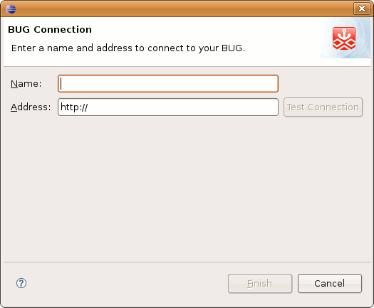

Interacting with My BUGs View
Contents |
My BUGs View
The My BUGs view displays any BUG Connections that are available to the SDK and allows you to interact with them. There are 3 connection types you will see in this window:
-
 Virtual BUG Connection.
Virtual BUG Connection.
-
 Static Connection (Manual).
Static Connection (Manual).
-
 Discovered BUG Connection (Physical BUG).
Discovered BUG Connection (Physical BUG).
You can:
- Click the New BUG Connection button to manually create a BUG Connection. This button is available via the Toolbar, My BUGs view title bar, and by right clicking in the My BUGs view.
- Double click the node on a BUG Connection to bring up a Physical Editor window for the Connection.
- Browse any BUG Connection's Applications, Modules, or Services nodes.
- Right click a BUG Connection to bring up a menu (see the Right Click Menu section below for details and options).
- Right click on an application in the BUG Connection Applications folder (see the Right Click Menu section below for details and options).
If you accidentally close this view you can go to Window > Show View > Other > Dragonfly > BUGnet to display it again.
BUG Connection
When the Virtual BUG is launched it will automatically appear in the My BUGs view. The same should happen for a physical BUG when it is connected to your computer via USB or connected to your Network. (If you are having trouble please see http://buglabs.net/start).
Creating a New BUG Connection
In some cases it may be necessary to create a BUG Connection manually.
- Clicking on a New BUG Connection icon will bring up the wizard:

- After you enter a Name and Address the Test Connection and Finish buttons will become active (the following screen uses the Virtual BUG address):

- Click Test Connection to validate the Connection or click Finish to add it to the My BUGs view.
Right Click on BUG Connection Menu
 New BUG Connection button - Opens New BUG Connection Wizard
New BUG Connection button - Opens New BUG Connection Wizard
 Delete BUG Connection button - Only active for Manually created Connections
Delete BUG Connection button - Only active for Manually created Connections
-
 Refresh BUG Connection button
Refresh BUG Connection button
- Properties - Update BUG Connection Address
- Additional menu options are available when right clicking on an application in the Applications folder.
-
 Remove application button (Note: If you right click on the Applications folder this button is "Remove All applications')
Remove application button (Note: If you right click on the Applications folder this button is "Remove All applications')
-
 Import into Dragonfly SDK button
Import into Dragonfly SDK button
-
Physical Editor Window
Double clicking a BUG Connection opens the Physical Editor for the BUG Connection:

When you click on the BUGbase or any module in the Physical Editor it will be highlighted in blue and the Properties view will populate with specific information for the component (Note: Selecting the BUGbase in the Physical Editor will enable the Applications by Modules section in the BUGnet view).

Some of these properties can be changed. For example on the BUGbase you can enable/disable Services.